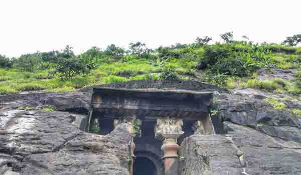
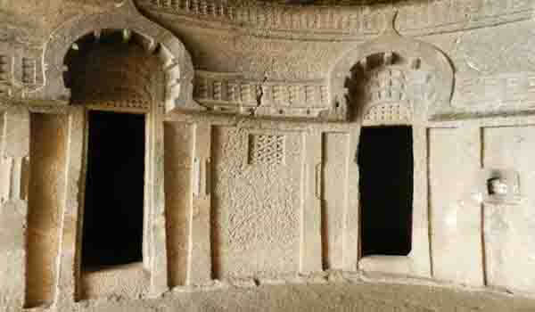

These Bedse caves, situated in the Pune district of Maharashtra at Maval Taluka. The Bedse caves comprise of two main caves. The most popular cave is known as the Chaitya or prayer hall and houses a large stupa. The other is the vihara or the monastery. It is somewhat less popular than the Bhaja and the Kalra caves but the trilogy of the Kalra, Bhaja and Bedse is incomplete without a visit to these caves.
Buddhist monks lived in these viharas during the rainy season and hence these viharas were known as the rain caves. The entrance of the caves is constructed by pillars and columns adorned with sculptures of horse, bull, elephants and deities. Apart from the two major caves, the complex of the caves housed innumerable small caves and a cave solely built for the purpose of meditation.
These caves have water tanks beneath them to provide a natural cooling effect with water from the springs. The Bedse Caves date back to 1st century B.C. These caves were constructed during the reigning period of the Great Ashoka ruler. The Berdse caves have a historical importance. The Kalinga war fought by Ashoka changed the life of this great ruler. He was so grief stricken and filled with remorse that he decided to shun violence and never to take up arms. To atone for this great mistake Ashoka embrace Buddhism and built numerous Buddhist monasteries for praying and the Bedse caves is one of them.